[figure]style=plain
UniChart: A Universal Vision-language Pretrained Model for
Chart Comprehension and Reasoning
Abstract
Charts are widely used for data analysis, providing visual representations and insights into complex data. To facilitate chart-based data analysis using natural language, several downstream tasks have been introduced recently such as chart question answering and chart summarization. However, existing methods for these tasks often rely on pretraining on language or vision-language tasks, neglecting the explicit modeling of chart structures (e.g., how chart elements are related to each other). To address this, we first build a large corpus of charts covering diverse topics and visual styles. We then present UniChart, a pretrained model for chart comprehension and reasoning. UniChart encodes the relevant text, data, and visual elements of charts and then uses a chart-grounded text decoder for text generation. We propose several chart-specific pretraining tasks that include: (i) low-level tasks to extract the visual elements (e.g., bars, lines) and data from charts, and (ii) high-level tasks to acquire chart understanding and reasoning skills. Our experiments demonstrate that pretraining UniChart on a large corpus with chart-specific objectives, followed by fine-tuning, yields state-of-the-art performance on four downstream tasks. Moreover, our model exhibits superior generalizability to unseen chart corpus, surpassing previous approaches that lack chart-specific objectives and utilize limited chart resources.
1 Introduction
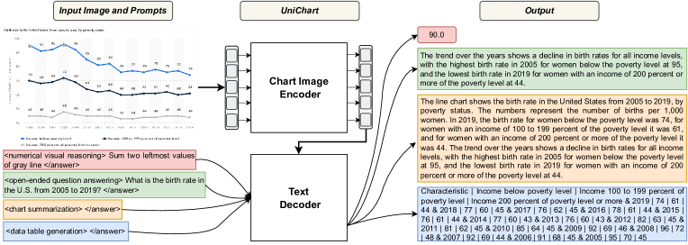
Information visualizations such as bar charts and line charts are commonly used for analyzing data, inferring key insights and making informed decisions Hoque et al. (2022). However, understanding important patterns and trends from charts and answering complex questions about them can be cognitively taxing. Thus, to facilitate users in analyzing charts, several downstream NLP tasks over charts have been proposed recently, including chart question answering Masry et al. (2022); Kantharaj et al. (2022); Lee et al. (2022), natural language generation for visualizations Obeid and Hoque (2020); Shankar et al. (2022) and automatic data story generation Shi et al. (2020).
A dominant strategy to tackle these downstream tasks is to utilize pretrained models Su et al. (2020); Li et al. (2020b); Kim et al. (2021); Cho et al. (2021) trained on langauge and vision tasks Du et al. (2022). However, although effective, such models may not be optimal for chart-specific tasks because they are trained on large text corpus and/or image-text pairs without any specific focus on chart comprehension. In reality, charts differ from natural images in that they visually communicate the data using graphical marks (e.g., bars, lines) and text (e.g., titles, labels, legends). Readers can discover important patterns, trends, and outliers from such visual representation Munzner (2014). Existing pretrained models do not consider such unique structures and communicative goals of charts. For instance, Pix2Struct Lee et al. (2022) is a pretrained image-to-text model designed for situated language understanding. Its pretraining objective focuses on screenshot parsing based on HTML codes of webpages, with a primary emphasis on layout understanding rather than reasoning over the visual elements. MatCha Liu et al. (2022b) extends Pix2Struct by incorporating math reasoning and chart data extraction tasks, but it still lacks training objectives for text generation from charts and it was trained on a limited number of charts.
In this work, we present UniChart, a pretrained model designed specifically for chart comprehension and reasoning. UniChart is pretrained on a large corpus of charts and it aims to serve as a Universal model for various chart-related downstream tasks (Fig. 1). Inspired by the model architecture from Kim et al. (2022), UniChart consists of two modules: (1) a chart encoder, which takes the chart image as input, and (2) a text decoder, trained to decode the expected output based on the encoded image and the text input fed in the decoder as task prompt. We performed pretraining on a diverse set of 611K charts that we collected from multiple real-world sources. Our pretraining objectives include both low-level tasks focused on extracting visual elements and data from chart images, as well as high-level tasks, intended to align more closely with downstream applications. One key challenge for pretraining was that most charts in the corpus do not come with informative summaries, which are critical for various downstream tasks. To address this challenge, we used knowledge distillation techniques to leverage large language models (LLMs) for opportunistically collecting chart summaries, which were then used during pretraining.
We conducted extensive experiments and analysis on various chart-specific downstream tasks to evaluate the effectiveness of our approach. Specifically, we evaluated UniChart on two chart question answering datasets, ChartQA Masry et al. (2022) and OpenCQA Kantharaj et al. (2022), and found that it outperformed the state-of-the-art models in both cases. For chart summarization, UniChart achieves superior performance in both human and automatic evaluation measures such as BLEU Post (2018) and ratings from ChatGPT OpenAI (2022). Moreover, UniChart achieved state-of-the-art results in the Chart-to-Table downstream task. Finally, our model showed improved time and memory efficiency compared to the previous state-of-the-art model, MatCha, being more than 11 times faster with 28% fewer parameters.
Our primary contributions are: (i) A pretrained model for chart comprehension with unique low-level and high-level pretraining objectives specific to charts; (ii) a large-scale chart corpus for pretraining, covering a diverse range of visual styles and topics; (iii) extensive automatic and human evaluations that demonstrate the state-of-the-art performance of UniChart across various chart-specific benchmark task while optimizing time and memory efficiency. We have made our code and chart corpus publicly available at https://github.com/vis-nlp/UniChart.
2 Related Work
2.1 Vision-language Pretraining
Pretrained models have dominated in many vision and language tasks Du et al. (2022). Building a pretrained vision-language model typically involves three steps. First, textual input is usually encoded using BERT-based encoder Lu et al. (2019); Radford et al. (2021); Li et al. (2021, 2022). Second, for the input image, some prior studies utilize Fast-RCNN Ren et al. (2015) to encode the sequence of object regions as the image features Li et al. (2019); Lu et al. (2019); Chen et al. (2020). However, this method may neglect some crucial regions in an image. Recent approaches favor encoding the image as a whole Huang et al. (2020, 2021); Li et al. (2021, 2022) by using ResNet He et al. (2016) or ViT Dosovitskiy et al. (2021). Third, to fuse the textual and visual features, prior work mostly either designs a fusion encoder Tan and Bansal (2019); Su et al. (2020); Cho et al. (2021); Kim et al. (2021) or a dual encoder Radford et al. (2021); Jia et al. (2021); Li et al. (2022). Finally, multiple common cross-modal pretraining tasks have been designed such as image-text matching Chen et al. (2020); Li et al. (2020a), cross-modal contrastive learning Radford et al. (2021); Jia et al. (2021) and generation tasks such as visual question answering Cho et al. (2021); Wang et al. (2021).
Our work is also related to multimodal document understanding tasks that involve analyzing the textual content, layout, and visual elements of documents Xu et al. (2020b, a); Wang et al. (2022); Huang et al. (2022); Kim et al. (2022); Tang et al. (2022). These tasks can be addressed using encoder-only and encoder-decoder architectures. Encoder-only models rely on OCR engines to extract text from document images and use BERT-like encoders augmented with specialized embeddings to encode layout and visual features Xu et al. (2020b, a); Wang et al. (2022); Huang et al. (2022). In contrast, encoder-decoder architectures combine transformer-based encoders with autoregressive text decoders for text generation tasks related to documents Tang et al. (2022); Kim et al. (2022); Lee et al. (2022). While Tang et al. (2022) incorporates an OCR tool to supplement the vision encoder, Kim et al. (2022) and Lee et al. (2022) operate in an end-to-end manner without external OCR engines. In line with the latter approach, our model adopts an end-to-end encoder-decoder architecture Kim et al. (2022).
In general, the above work focuses on training on large image-text pairs or text corpus, lacking focus on chart understanding. One exception is MatCha Liu et al. (2022b), a pretrained chart model based on Pix2Struct Lee et al. (2022), which achieved SoTA on chart question answering and summarization tasks. However, MatCha’s pretraining tasks mainly focus on data table generation without focusing on text generation tasks. The model is also pretrained with reasoning tasks using the textual datasets which might limit its visual reasoning ability. Our model is trained on a larger corpus with chart-specific pretraining objectives, including visual reasoning and text generation, making it more versatile for various chart-related tasks.
2.2 Chart-related Downstream Tasks
There has been growing interest in solving various chart-related tasks. Chart question answering (ChartQA) tackles questions about charts, with benchmarks like Methani et al. (2020) and Masry et al. (2022) targeting factoid questions involving visual and arithmetic reasoning. Open-ended question answering (OpenCQA) task requires an explanatory answer by reasoning with the chart content Kantharaj et al. (2022). Finally, Chart-to-Text generates natural language summaries from input charts Shankar et al. (2022), while Chart-to-Table generates underlying data tables Choi et al. (2019). We evaluate our model on these four chart-related tasks, as they involve the interaction between language and vision and have publicly available datasets. There are a few other tasks such as infographics understanding Mathew et al. (2022) and question answering with science diagram Kembhavi et al. (2016), however, in this work, we only focus on chart-related tasks.
3 Chart Pretraining Corpus
To build a large and diverse corpus with various styles, topics, and storage formats, we crawled charts from various online sources. Additionally, we utilized publicly available chart datasets suitable for pretraining. The collected charts can be categorized into two types: charts with underlying data tables and charts without data tables.
3.1 Charts with Data Tables
Charts with an underlying data table are collected in three ways: (i) utilize existing datasets, (ii) extract SVG charts, and (iii) data augmentation.
Utilize Existing Datasets Our goal was to train the model based on real-world data, thus, we did not consider the ones that are generated from synthetic data Kafle et al. (2018); Kahou et al. (2018). In particular, we used the following five chart datasets for which the underlying data tables were available: (i) Statista (statista.com) Shankar et al. (2022), (ii) Our World In Data or OWID (ourworldindata.org) Masry et al. (2022), (iii) Organisation for Economic Co-operation and Development or OECD (oecd.org) Masry et al. (2022), (iv) PlotQA Methani et al. (2020), and (v) a subset of the ChartInfo ChartInfo (2022) dataset that provides bounding box annotations for data encoding marks (e.g., bars in a bar chart).
Extract SVG Charts: We extracted charts in SVG format from the Chartblocks and Plotly datasets of the Beagle corpus Battle et al. (2018). These charts do not come with data tables, but the data can be extracted accurately from the SVG elements. The steps for preparing these charts are: (1) identify axis labels and legends using specific class names of HTML attribute, (2) extract bounding boxes of chart elements (e.g., bars, line) using SVG attribute properties (e.g., size and location of <rect>), (3) construct the underlying data table by iterating through each of the <g> elements to find data values of each data attribute. When data labels are absent, we utilize the scale information based on the axis labels and tick marks of the chart and the bounding box information of data encoding marks to recover the data values.
Data Augmentation We further augmented the corpus by creating charts from publicly available data tables. We used the The Web Data Commons (WDC) WDC (2022), which used Common Crawl111https://commoncrawl.org/ to collect a large amount of structured data. The charts are created in the following steps:
-
(i)
Data pre-processing: Since many tables in WDC contain more than three columns, we decomposed so that tables are suitable for creating desired chart types (e.g., bars, lines, and pie charts). In particular, we automatically analyze the data type of each column (e.g, numeric vs. categorical) and then randomly choose one column with numeric data values and one/two column(s) with categorical data. We also limit the maximum number of rows of the table to 8 so that the corresponding chart can fit within reasonable screen space.
-
(ii)
Chart generation: To generate visually diverse charts, we used the D3 Bostock et al. (2011) library that provides great flexibility in terms of creating diverse visualization styles. We also employed Vega-Lite Satyanarayan et al. (2016) which creates charts based on declarative JSON syntax. We used simple heuristics for determining chart types from the data table Mackinlay et al. (2007). We created four types of charts: (1) vertical simple bar charts with one numeric data column, (2) vertical grouped bar charts, (3) pie charts, and (4) line charts (both single series and multi-series).
-
(iii)
Visual diversification: To create visually diverse charts resembling real-world variations, we manipulated the following visual style properties: (1) Colors and shapes: Color schemes from ColorBrewer222https://colorbrewer2.org/ and Tableau333tableau.com were chosen for categorical data attributes. We also varied shape properties such as bar thickness, line types (e.g., continuous vs dotted), and legend shape types (e.g., rect, circle). (2) Position and distance: We also varied bar positions and distances with respect to axis labels. (3) Guides: Charts may contain additional guides such as grids, so we generate charts with and without grids to diversify styles.
3.2 Charts without Data Tables
Many online charts are available only as images, without corresponding data tables. However, they can still be valuable for large-scale pretraining as we can extract chart elements and rich textual contents (e.g., titles, surrounding texts, captions) using object detection and optical character recognition (OCR) techniques. We collected image chart datasets such as LineCap Mahinpei et al. (2022) and Neural Caption Generation Spreafico and Carenini (2020) since they provide high-quality summaries. We also used the Pew dataset from Shankar et al. (2022) and further augmented it by an crawling additional 1K charts. Finally, we used the ExcelChart400K dataset Luo et al. (2021) which only provides bounding boxes without underlying data tables. We also considered other existing image chart datasets such as Vis30K Chen et al. (2021) and VisImage Deng et al. (2020), but they are not suitable as they usually have poor resolution and lack meaningful textual content (e.g., titles).
3.3 Augmentation by Knowledge Distillation for Chart-to-text Generation Tasks
Chart-related downstream tasks such as chart summarization Shankar et al. (2022) and open-ended question answering Kantharaj et al. (2022) require generating informative and relevant texts. However, for most of the charts in the pretraining corpus, there are either no associated summaries or the summaries that are collected opportunistically such as the Statista dataset Shankar et al. (2022) lack quality (e.g., too short and not very informative). Training on such substandard “ground-truth” summaries can negatively affect the overall model performance as shown in text summarization Kryscinski et al. (2019); Clark et al. (2021). Indeed, Goyal et al. (2022) and Liu et al. (2023b) have recently shown that human raters prefer summaries generated by LLMs, especially the ones that are instruction-tuned such as InstructGPT Ouyang et al. (2022), compared to the reference summaries in various text summarization datasets. Consequently, the instruction-tuned LLMs have been successfully used as a annotator in several recent studies DING et al. (2023); Qin et al. (2023).
Inspired by these findings, we leveraged InstructGPT to generate coherent and relevant text. Specifically, we prompted text-davinci-003 by providing the underlying data table as input and one exemplar (i.e., 1-shot in-context learning). Since generating summaries for thousands of charts by calling OpenAI API is quite costly, we devised a knowledge distillation approach. We first used text-davinci-003 to create a small dataset of 3700 summaries for different chart types. Next, we finetuned Flan-T5 XL Chung et al. (2022) on this dataset. Finally, we utilized the finetuned Flan-T5 model to generate summaries for charts that do not have an associated summary. More details about this approach can be found in Section A.2.
3.4 Datasets Analysis
Our chart pretraining corpus has over 611K charts covering a diverse range of bar charts, line charts, and pie charts (Table 4). Data tables of Simple charts have two columns (simple bar charts or single-series line charts), whereas Complex charts involve at least three columns (e.g., stacked or group bar charts, line charts with multiple lines). The first two chart groups in Table 4 come with an underlying data table which cover over 80% of the corpus. The bottom group contains five datasets which only provide charts in image format without a data table444The ExcelChart400K dataset only provides bounding box annotations of chart elements and we used this dataset for data value estimation task during pretraining. and cover about 20% of the corpus. Bar charts make up the majority portion (58.51%), followed by line charts (32.94%) and pie charts (9.39%). About 60% of the charts have multiple columns in their data tables, while 40% of the charts have only two columns.555 Since we do not have access to the chart types of Pew dataset, we manually tagged random 200 samples from each of these datasets to estimate the chart type distribution. The corpus also covers a diverse range of topics including technology, economy, politics, health, and society. Details about the linguistics of the corpus textual elements can be found in Section A.3.
4 Method
We propose UniChart, a unified pretrained model for chart comprehension and reasoning. This section first introduces the UniChart architecture followed by its pretraining objectives (hyperparameter settings are provided in Section A.4).
4.1 Model Architecture
UniChart consists of two main modules: a chart image encoder and a text decoder as shown in Fig. 1.
Chart Image Encoder In order to effectively encode a chart image, an encoder needs to identify and interpret three different types of chart components: (1) textual elements (axis labels and legends), (2) visual elements (e.g., bars, lines), and (3) the layout that arranges textual and visual elements within a chart. Since this has a similarity with document image (e.g., receipts) understanding, our chart image encoder builds upon the encoder of one of the recent state-of-the-art document image understanding models, Donut Kim et al. (2022).
Donut offers an OCR-free architecture. The model is pretrained using an OCR-pseudo task, where it sequentially generates the encoded text in a document image, following the order from the top-left corner to the bottom-right corner of the image. As a result, we did not have to run an external OCR module like CRAFT Baek et al. (2019) and Parseq Bautista and Atienza (2022), which improved time and memory efficiency throughout our training pipeline. Donut employs Swin Transformer Liu et al. (2021) architecture as the image encoder. To encode the chart image features, the images are split into non-overlapping patches, which are then processed using shifted window-based multi-headed self-attention and MLP layers to produce the image embeddings.
4.2 Pretraining Objectives
Our pretraining objectives include low-level tasks that are more focused on retrieving the underlying data from the chart images and high-level tasks that align closely with the downstream tasks.
Data Table Generation A chart creates a visual representation of a data table by mapping each data attribute (e.g., ‘country’, ‘population’) to corresponding visual attributes (e.g., x-positions, height) of graphical marks (e.g, bars). An effective chart comprehension and reasoning model should be able to deconstruct the structured underlying data table by recovering such mappings. To this end, we propose the data table generation task in which we ask the model to generate the flattened data table given a chart image.
A vast amount of charts available online are stored as bitmap images without access to the underlying data. It is important to learn how to recover data values when the chart data is not available. Therefore, we also introduce the data value estimation task, in which the model is asked to generate the scale of the graphical marks (e.g., bars, line points) as a percentage of the chart plot area. We obtain these scales by dividing the bars or line points heights (bounding boxes) by the height of the chart plot area and rounding the result to two decimal places. At the final stage, we use charts for which both data tables and object bounding boxes are available as well as charts for which at least the bounding box annotations are available, e.g., ExcelCharts from Luo et al. (2021).
| Dataset | Data Table Generation | Numerical & Visual Reasoning | Open-ended Question Answering | Chart Summarization |
| Pew | 0 | 0 | 5,295 | 5,295 |
| Statista, OECD, OWID | 144,147 | 679,420 | 126,009 | 126,009 |
| PlotQA | 155,082 | 2,414,359 | 157,070 | 157,070 |
| LineCap | 0 | 0 | 2,821 | 2,821 |
| Neural Caption | 0 | 0 | 100 | 306 |
| Beagle | 3,972 | 51 | 0 | 0 |
| ChartInfo | 1,796 | 21,949 | 0 | 0 |
| Data Aug. | 189,792 | 2,218,468 | 189,802 | 189,802 |
| ExcelChart | 106,897 | 0 | 0 | 0 |
| Total | 601,686 | 5,334,247 | 481,097 | 481,303 |
Numerical & Visual Reasoning Many downstream applications over charts may involve numerical and visual reasoning with the chart elements such as chart QA and summarization. For example, the model may need to apply a series of mathematical and logical operations such as addition, subtraction and comparisons to answer a question. To inject such reasoning skills into the model, we design template-based numerical reasoning tasks where the model is trained to execute/perform the most common mathematical operations over the chart data values. We manually analyzed the existing task datasets (e.g., ChartQA) to find the most common operations (e.g., sum, average, difference, etc.) and constructed 90 templates that we utilize to generate synthetic question and answer pairs. All the templates are provided in Section A.9.
Open-ended Question Answering It is very common for users to ask open-ended questions over charts Kantharaj et al. (2022). Such questions often ask for answers that require high-level reasoning and explanations. To improve the capability of the model in answering open-ended questions, we follow previous work Shi et al. (2022) to generate synthetic open-ended QA pairs. Specifically, a T5 model Raffel et al. (2020) pretrained on SQuAD Rajpurkar et al. (2016) is employed to generate an open-ended question for each summary. The sentence containing the answer in the summary then serves as the answer to its generated question.
Chart Summarization Image captioning is a fundamental problem in AI in which the machines need to summarize the main content of the image in the textual form. This task has been studied extensively Vinyals et al. (2015); Herdade et al. (2019); Hu et al. (2021); Li et al. (2022). We follow previous work Vinyals et al. (2015); Xia et al. (2021) to pretrain our model on this task to further enhance the model’s capability in generating textual descriptions from the chart image. As discussed in Section 3.3, we used mostly the summaries generated from GPT models provided by OpenAI either directly or through a knowledge distillation step.
4.3 Downstream Tasks
In addition to zero-shot evaluation, we also adapt UniChart by finetuning it on a downstream task. We consider four downstream tasks: (1) Factoid Chart Question Answering: we use ChartQA Masry et al. (2022), which is a benchmark consisting of factoid question-answer pairs for charts with a particular focus on visual and logical reasoning questions; (2) Complex Chart Question Answering: we consider OpenCQA Kantharaj et al. (2022), another QA benchmark in which answers are explanatory descriptions; (3) Chart Summarization: we use Chart-to-Text Shankar et al. (2022), a large-scale benchmark for chart summarization; (4) Chart-to-Table: we use ChartQA for both finetuning and evaluation. Moreover, we evaluate the pretrained model in a zero-shot setup on the WebCharts dataset Choi et al. (2019), a collection of 300 charts obtained from the web. Our experimental setups and hyperparameters for each downstream task are provided in Section A.4.
| ChartQA | OpenCQA | Chart-to-Text | Chart-to-Table | |||||
| () | () | () | ( | ) | |||||
| Model | aug. | human | avg. | OpenCQA | Pew | Statista | ChartQA | WebCharts |
| VisionTaPas Masry et al. (2022) | 61.44 | 29.60 | 45.52 | - | - | - | - | - |
| T5 Masry et al. (2022) | 56.96 | 25.12 | 41.04 | 9.28 | 10.49 | 35.29 | - | - |
| VL-T5 Masry et al. (2022) | 56.88 | 26.24 | 41.56 | 14.73 | - | - | - | - |
| Pix2Struct Lee et al. (2022) | 81.6 | 30.5 | 56.0 | - | 10.3 | 38.0 | - | - |
| MatCha Liu et al. (2022b) | 90.2 | 38.2 | 64.2 | - | 12.2 | 39.4 | 85.21 | 83.49 | 44.37 | 17.94 |
| UniChart | 88.56 | 43.92 | 66.24 | 14.88 | 12.48 | 38.21 | 94.01 | 91.10 | 60.73 | 43.21 |
5 Evaluation
5.1 Baselines & Evaluation Metrics
We compare our model against five baselines: (1) T5 Raffel et al. (2020), a unified seq2seq Transformer model that achieved state-of-the-art (SoTA) results on various text-to-text tasks, including question answering and summarization; (2) VL-T5 Cho et al. (2021), a T5-based model that unifies Vision-Language (VL) tasks as text generation conditioned on multimodal inputs and achieved SoTA results on OpenCQA Kantharaj et al. (2022); (3) VisionTapas Masry et al. (2022), an extension of TaPas Herzig et al. (2020), a SoTA table encoder, adapted for QA over charts; (4) Pix2Struct Lee et al. (2022), a pretrained image-to-text model for visual language understanding and achieved SoTA results on document understanding tasks; and (5) MatCha Liu et al. (2022b), an adapted version of Pix2Struct for charts that is further pretrained on math reasoning and chart data extraction tasks, achieving SoTA results on Chart-to-Text Shankar et al. (2022) and ChartQA Masry et al. (2022).
To evaluate our approach, we follow previous works Lee et al. (2022); Shankar et al. (2022); Masry et al. (2022); Kantharaj et al. (2022); Liu et al. (2022b) and utilize Relaxed Accuracy (RA) for ChartQA and BLEU Post (2018) for text-generation tasks (Chart-to-Text and OpenCQA). However, the BLEU score has limitations as it primarily focuses on n-gram matching between the generated and reference texts, overlooking important factors such as semantic similarity, informativeness, and factual correctness Goyal et al. (2022). Therefore, we conduct a human evaluation and ChatGPT-driven study to assess and compare these crucial aspects in the outputs of different models (Section 5.3). Finally, we use Relative Number Set Similarity (RNSS) Masry et al. (2022) and Relative Mapping Similarity (RMS) Liu et al. (2022a) metrics to evaluate the Chart-to-Table task.
5.2 Main Results
As shown in Table 2, UniChart outperforms previous state-of-the-art models, MatCha and VL-T5, on the ChartQA and Chart-to-Text (Pew) datasets, although it shows slightly lower performance on Chart-to-Text (Statista). The performance gap is more prominent on the challenging human-written questions in the ChartQA benchmark Masry et al. (2022), where our model’s pretraining objectives tailored to visual and numerical reasoning give it a significant advantage. UniChart also achieved a higher BLUE score compared to the SoTA VL-T5 model on OpenCQA benchmark, which demonstrates our model’s capability in generating explanatory answers for questions about charts. Finally, UniChart surpasses MatCha’s performance on two datasets, demonstrating its generalizability across diverse visual styles, even in a zero-shot setup on unseen charts (WebCharts). Overall, these results establish UniChart as the SoTA model for chart comprehension and reasoning tasks.
To further assess the impact of our different pretraining objectives on our model’s performance, we conducted ablation studies. We observe that removing various pertaining objectives led to a slight decrease in performance (Table 8). The decrease in performance is particularly noticeable when the Numerical Reasoning pretaining task is removed, highlighting the importance of this task in imbuing numerical abilities into our model. More details of this experiment can be found in Section A.5.
5.3 Human and ChatGPT Evaluation
As discussed in Section 5.1, reference-based metrics like BLEU have relatively low correlations with human judgments Belz and Reiter (2006); Tan et al. (2015); Liu et al. (2023a), and generated texts with very high such scores can be of a very poor quality Smith et al. (2016). Therefore, we decided to conduct a human evaluation to measure the quality of summaries generated by different models. We focus on following criteria in the chart summarization task:(1) Informativeness; (2) Factual Correctness; and(3) Semantic Levels that characterize the content of the summary. More details about the criteria can be found in Section A.6.
We randomly picked 150 sample charts from Chart2text Statista test split and asked 3 human annotators to rate four summaries for each chart based on informativeness out of 1 to 5. The order of exposure of summaries to the annotator was randomized to avoid any potential bias. Summaries for each chart were rated by one annotator except for the first 100 charts for which we had two annotators to measure the agreement. We computed Krippendorff’s alpha Krippendorff (2011) to measure inter-annotator agreement and found a moderate level of agreement with an alpha coefficient of 0.54. We further utilize ChatGPT for evaluating the same 150 samples, as LLMs have demonstrated their effectiveness as evaluators for text generation tasks Luo et al. (2023); Liu et al. (2023a); Gao et al. (2023); Fu et al. (2023). We define the informativeness criteria and rating scheme to ChatGPT and then employ ChatGPT to generate evaluation steps. We then send these evaluation steps along with the data table of the chart and the summary to ChatGPT to obtain ratings (see Section A.6 for details).
Table 3 shows the result of human evaluation on chart summarization based on informativeness criteria. We notice that annotators preferred ZeroShot version of our model which generates summaries that are more similar to those generated by GPT, rather than gold summaries. The finetuned version of UniChart was also rated higher compared to SoTA MatCha Liu et al. (2022b). The finetuned UniChart model also produces fewer factual errors compared to Matcha and the ZeroShot version (Section A.6 and Table 7). We observe that the ratings provided by ChatGPT are roughly consistent with the human annotators’ scores in terms of informativeness criteria. In terms of different semantic contents, the ZeroShot model tends to contain more sentences with high-level visual patterns and trends. A previous study finds that such high-level insights lead to more reader takeaways compared to the text describing low-level visual encodings like axes and colors Stokes et al. (2022). Overall, the results above suggest that UniChart model’s summaries are more informative with high-level insights and factually accurate than the SoTA (MatCha).
5.4 Time and Memory Efficiency
UniChart exhibits significant time efficiency compared to MatCha, as shown in Fig. 4. The gap in speed is more evident on tasks that require the generation of long output sequences (e.g., Chart-to-Text). This difference in speed can be attributed to MatCha’s use of a long input sequence (4K) with a quadratic increase in complexity while UniChart’s vision encoder relies on sliding windows with a local attention mechanism that scales linearly with the input image size. Moreover, UniChart boasts a smaller parameter count (201M) compared to MatCha (282M), further contributing to its efficiency. As a result, UniChart is highly suitable for real-world applications that prioritize fast inference speeds. More details are provided in Section A.8.
5.5 Error Analysis and Challenges
We conducted a manual analysis of our model’s outputs to identify key challenges faced by existing models.
Densely populated charts: Our model struggles with extracting insights from chart images that contain numerous data elements densely packed in a limited area. This is evident in Figure Fig. 9 (Q3) where our model generates a hallucinated summary due to the complexity of the chart. Increasing model parameters and input image resolution could potentially improve performance in these cases.
Numerical reasoning: Despite efforts to incorporate mathematical skills, our model still encounters difficulties with complex arithmetic calculations (Q2 in Fig. 9). Addressing this challenge involves decoupling arithmetic calculations and reasoning steps by employing external program executors that perform the calculations using the equations generated by our model Gao et al. (2022).
Factual correctness in generated summaries: Factual correctness still poses a challenge for autoregressive language models Lin et al. (2022); OpenAI (2022); Zhao et al. (2023). Although our finetuned UniChart model produced fewer factual errors compared to MatCha (see Table 7), it still generates some incorrect statements (see Q4 in Fig. 9). This issue can be attributed to factual errors in the pretraining captions generated by ChatGPT.
6 Conclusion
We present UniChart, a general purpose pretrained model designed for a broad range of chart-related tasks. Our model incorporates chart-specific pretraining tasks and is trained on a large and diverse collection of charts and corresponding summaries collected opportunistically using LLMs. We conducted both human and ChatGPT evaluations to show the superiority of our method. While our model sets the state-of-the-art record on four different downstream tasks and showed improved time and memory efficiency, the evaluation also reveals opportunities for improvement. We believe that our model and pretraining data will be valuable resources for future research and encourage further exploration in this relatively new area.
Limitations
While UniChart exhibits state-of-the-art performance on several benchmarks, it suffers from several limitations. Despite the remarkable abilities on the ChartQA dataset, the model still struggles to answer questions that involve compositional mathematical operations. Moreover, we have noticed that the model may hallucinate and produce factually incorrect statements on the text generation tasks such as Chart-to-Text and OpenCQA.
Despite the generalizability of our model on unseen chart image styles (WebCharts), there’s still a noticeable drop in performance compared to the performance on the tasks on which the model is finetuned (e.g., ChartQA). Hence, there’s still a need for better generalizable chart models for the diverse charts on the Web. One direction is to enlarge our pretraining datasets by crawling millions of chart images from the Web. Since most charts on the Web do not provide high-quality captions or the underlying data table, self-supervised pretraining objectives are needed to benefit from these charts.
Due to the limited computing resources, we did not investigate the effect hyperparameter tuning might have on the performance on the different downstream tasks. Also, although we have noticed the convergence of UniChart at the end of the second stage pretraining, we can not confirm whether further pretraining may improve the performance of our model.
Ethics Statement
During the dataset collection process, we made sure to comply with the terms and conditions of the different websites we used to crawl our data. Statista666https://www.statista.com/getting-started/publishing-statista-content-terms-of-use-and-publication-rights provide a permissive license to use their publicly available data for scientific purposes. Pew Research Centre 777https://www.pewresearch.org/about/terms-and-conditions/ also provide a permissive license to use their data with the condition that we attribute it to the Centre. OECD888https://www.oecd.org/termsandconditions/ allows the users to download and publish their data as long as they give appropriate credit to the OECD website. For OWID999https://ourworldindata.org/faqs#can-i-use-or-reproduce-your-data, all their data are provided under the Creative Commons BY license which gives the permission for downloading and publication. Web Data Commons101010https://webdatacommons.org/, which we used in the data augmentation process, allows the usage of their data under the conditions of the Apache License Software which gives the right to download and publish. Finally, all the remaining datasets (PlotQA, Beagle, ChartInfo, ExcelChart400K, LineCap, and Neural Captions) are publicly available datasets which were released in earlier scientific publications.
Due to the generative nature of our models, they may be abused for misinforming the public by generating factually incorrect responses. Moreover, we can not guarantee that our models may not produce texts that may contain hate speech or harmful content.
Acknowledgement
The authors would like to thank the anonymous reviewers for their helpful comments. This research was supported by the Natural Sciences & Engineering Research Council (NSERC) of Canada and Canada Foundation for Innovation (CFI).
References
- Baek et al. (2019) Youngmin Baek, Bado Lee, Dongyoon Han, Sangdoo Yun, and Hwalsuk Lee. 2019. Character region awareness for text detection. CoRR, abs/1904.01941.
- Battle et al. (2018) Leilani Battle, Peitong Duan, Zachery Miranda, Dana Mukusheva, Remco Chang, and Michael Stonebraker. 2018. Beagle: Automated extraction and interpretation of visualizations from the web. In Proceedings of the 2018 CHI Conference on Human Factors in Computing Systems, pages 1–8.
- Bautista and Atienza (2022) Darwin Bautista and Rowel Atienza. 2022. Scene text recognition with permuted autoregressive sequence models. In European Conference on Computer Vision, pages 178–196, Cham. Springer Nature Switzerland.
- Belz and Reiter (2006) Anja Belz and Ehud Reiter. 2006. Comparing automatic and human evaluation of NLG systems. In 11th Conference of the European Chapter of the Association for Computational Linguistics, pages 313–320, Trento, Italy. Association for Computational Linguistics.
- Bostock et al. (2011) Michael Bostock, Vadim Ogievetsky, and Jeffrey Heer. 2011. D3: Data-driven documents. IEEE Transactions on Visualization & Computer Graphics (Proc. InfoVis).
- ChartInfo (2022) ChartInfo. 2022. Competition on harvesting raw tables from infographics.
- Chen et al. (2021) Jian Chen, Meng Ling, Rui Li, Petra Isenberg, Tobias Isenberg, Michael Sedlmair, Torsten Moller, Robert S Laramee, Han-Wei Shen, Katharina Wunsche, et al. 2021. Vis30k: A collection of figures and tables from ieee visualization conference publications. IEEE Transactions on Visualization and Computer Graphics.
- Chen et al. (2020) Yen-Chun Chen, Linjie Li, Licheng Yu, Ahmed El Kholy, Faisal Ahmed, Zhe Gan, Yu Cheng, and Jingjing Liu. 2020. Uniter: Universal image-text representation learning. In European conference on computer vision, pages 104–120. Springer.
- Cho et al. (2021) Jaemin Cho, Jie Lei, Hao Tan, and Mohit Bansal. 2021. Unifying vision-and-language tasks via text generation. In ICML.
- Choi et al. (2019) J. Choi, Sanghun Jung, Deok Gun Park, J. Choo, and N. Elmqvist. 2019. Visualizing for the non-visual: Enabling the visually impaired to use visualization. Computer Graphics Forum, 38.
- Chung et al. (2022) Hyung Won Chung, Le Hou, Shayne Longpre, Barret Zoph, Yi Tay, William Fedus, Eric Li, Xuezhi Wang, Mostafa Dehghani, Siddhartha Brahma, et al. 2022. Scaling instruction-finetuned language models. arXiv preprint arXiv:2210.11416.
- Clark et al. (2021) Elizabeth Clark, Tal August, Sofia Serrano, Nikita Haduong, Suchin Gururangan, and Noah A. Smith. 2021. All that’s ‘human’ is not gold: Evaluating human evaluation of generated text. In Proceedings of the 59th Annual Meeting of the Association for Computational Linguistics and the 11th International Joint Conference on Natural Language Processing (Volume 1: Long Papers), pages 7282–7296, Online. Association for Computational Linguistics.
- Deng et al. (2020) Dazhen Deng, Yihong Wu, Xinhuan Shu, Jiang Wu, Mengye Xu, Siwei Fu, Weiwei Cui, and Yingcai Wu. 2020. Visimages: a corpus of visualizations in the images of visualization publications. arXiv preprint arXiv:2007.04584.
- DING et al. (2023) BOSHENG DING, Chengwei Qin, Linlin Liu, Yew Ken Chia, Lidong Bing, Boyang Li, and Shafiq Joty. 2023. Is gpt-3 a good data annotator? In Proceedings of the 61st Annual Meeting of the Association for Computational Linguistics, ACL’23, Toronto, Canada. ACL.
- Dosovitskiy et al. (2021) Alexey Dosovitskiy, Lucas Beyer, Alexander Kolesnikov, Dirk Weissenborn, Xiaohua Zhai, Thomas Unterthiner, Mostafa Dehghani, Matthias Minderer, Georg Heigold, Sylvain Gelly, Jakob Uszkoreit, and Neil Houlsby. 2021. An image is worth 16x16 words: Transformers for image recognition at scale. In International Conference on Learning Representations.
- Du et al. (2022) Yifan Du, Zikang Liu, Junyi Li, and Wayne Xin Zhao. 2022. A survey of vision-language pre-trained models. In Proceedings of the Thirty-First International Joint Conference on Artificial Intelligence, IJCAI-22, pages 5436–5443. International Joint Conferences on Artificial Intelligence Organization. Survey Track.
- Fu et al. (2023) Jinlan Fu, See-Kiong Ng, Zhengbao Jiang, and Pengfei Liu. 2023. Gptscore: Evaluate as you desire.
- Gao et al. (2022) Luyu Gao, Aman Madaan, Shuyan Zhou, Uri Alon, Pengfei Liu, Yiming Yang, Jamie Callan, and Graham Neubig. 2022. Pal: Program-aided language models. arXiv preprint arXiv:2211.10435.
- Gao et al. (2023) Mingqi Gao, Jie Ruan, Renliang Sun, Xunjian Yin, Shiping Yang, and Xiaojun Wan. 2023. Human-like summarization evaluation with chatgpt.
- Goyal et al. (2022) Tanya Goyal, Junyi Jessy Li, and Greg Durrett. 2022. News summarization and evaluation in the era of gpt-3.
- He et al. (2016) Kaiming He, Xiangyu Zhang, Shaoqing Ren, and Jian Sun. 2016. Deep residual learning for image recognition. In Proceedings of the IEEE conference on computer vision and pattern recognition, pages 770–778.
- Herdade et al. (2019) Simao Herdade, Armin Kappeler, Kofi Boakye, and Joao Soares. 2019. Image captioning: Transforming objects into words. Advances in Neural Information Processing Systems, 32.
- Herzig et al. (2020) Jonathan Herzig, Pawel Krzysztof Nowak, Thomas Müller, Francesco Piccinno, and Julian Eisenschlos. 2020. TaPas: Weakly supervised table parsing via pre-training. In Proceedings of the 58th Annual Meeting of the Association for Computational Linguistics, pages 4320–4333, Online. Association for Computational Linguistics.
- Hoque et al. (2022) Enamul Hoque, Parsa Kavehzadeh, and Ahmed Masry. 2022. Chart question answering: State of the art and future directions. Journal of Computer Graphics Forum (Proc. EuroVis), pages 555–572.
- Hu et al. (2021) Xiaowei Hu, Xi Yin, Kevin Lin, Lei Zhang, Jianfeng Gao, Lijuan Wang, and Zicheng Liu. 2021. Vivo: Visual vocabulary pre-training for novel object captioning. In Proceedings of the AAAI Conference on Artificial Intelligence, volume 35, pages 1575–1583.
- Huang et al. (2022) Yupan Huang, Tengchao Lv, Lei Cui, Yutong Lu, and Furu Wei. 2022. Layoutlmv3: Pre-training for document ai with unified text and image masking. In Proceedings of the 30th ACM International Conference on Multimedia, MM ’22, page 4083–4091, New York, NY, USA. Association for Computing Machinery.
- Huang et al. (2021) Zhicheng Huang, Zhaoyang Zeng, Yupan Huang, Bei Liu, Dongmei Fu, and Jianlong Fu. 2021. Seeing out of the box: End-to-end pre-training for vision-language representation learning. In Proceedings of the IEEE/CVF Conference on Computer Vision and Pattern Recognition, pages 12976–12985.
- Huang et al. (2020) Zhicheng Huang, Zhaoyang Zeng, Bei Liu, Dongmei Fu, and Jianlong Fu. 2020. Pixel-bert: Aligning image pixels with text by deep multi-modal transformers. arXiv preprint arXiv:2004.00849.
- Jia et al. (2021) Chao Jia, Yinfei Yang, Ye Xia, Yi-Ting Chen, Zarana Parekh, Hieu Pham, Quoc Le, Yun-Hsuan Sung, Zhen Li, and Tom Duerig. 2021. Scaling up visual and vision-language representation learning with noisy text supervision. In International Conference on Machine Learning, pages 4904–4916. PMLR.
- Kafle et al. (2018) Kushal Kafle, Brian Price, Scott Cohen, and Christopher Kanan. 2018. Dvqa: Understanding data visualizations via question answering. Proceedings of the IEEE Computer Society Conference on Computer Vision and Pattern Recognition, pages 5648–5656.
- Kahou et al. (2018) Samira Ebrahimi Kahou, Vincent Michalski, Adam Atkinson, Ákos Kádár, Adam Trischler, and Yoshua Bengio. 2018. Figureqa: An annotated figure dataset for visual reasoning. 6th International Conference on Learning Representations, ICLR 2018 - Workshop Track Proceedings, pages 1–20.
- Kantharaj et al. (2022) Shankar Kantharaj, Xuan Long Do, Rixie Tiffany Ko Leong, Jia Qing Tan, Enamul Hoque, and Shafiq Joty. 2022. Opencqa: Open-ended question answering with charts. In Proceedings of EMNLP (to appear).
- Kembhavi et al. (2016) Aniruddha Kembhavi, Mike Salvato, Eric Kolve, Minjoon Seo, Hannaneh Hajishirzi, and Ali Farhadi. 2016. A diagram is worth a dozen images. In European conference on computer vision, pages 235–251. Springer.
- Kim et al. (2022) Geewook Kim, Teakgyu Hong, Moonbin Yim, JeongYeon Nam, Jinyoung Park, Jinyeong Yim, Wonseok Hwang, Sangdoo Yun, Dongyoon Han, and Seunghyun Park. 2022. Ocr-free document understanding transformer. In European Conference on Computer Vision, pages 498–517. Springer.
- Kim et al. (2021) Wonjae Kim, Bokyung Son, and Ildoo Kim. 2021. Vilt: Vision-and-language transformer without convolution or region supervision. In Proceedings of the 38th International Conference on Machine Learning, volume 139 of Proceedings of Machine Learning Research, pages 5583–5594. PMLR.
- Krippendorff (2011) Klaus Krippendorff. 2011. Computing krippendorff’s alpha-reliability.
- Kryscinski et al. (2019) Wojciech Kryscinski, Nitish Shirish Keskar, Bryan McCann, Caiming Xiong, and Richard Socher. 2019. Neural text summarization: A critical evaluation. In Proceedings of the 2019 Conference on Empirical Methods in Natural Language Processing and the 9th International Joint Conference on Natural Language Processing (EMNLP-IJCNLP), pages 540–551, Hong Kong, China. Association for Computational Linguistics.
- Lee et al. (2022) Kenton Lee, Mandar Joshi, Iulia Turc, Hexiang Hu, Fangyu Liu, Julian Eisenschlos, Urvashi Khandelwal, Peter Shaw, Ming-Wei Chang, and Kristina Toutanova. 2022. Pix2struct: Screenshot parsing as pretraining for visual language understanding. arXiv preprint arXiv:2210.03347.
- Lewis et al. (2019) Mike Lewis, Yinhan Liu, Naman Goyal, Marjan Ghazvininejad, Abdelrahman Mohamed, Omer Levy, Veselin Stoyanov, and Luke Zettlemoyer. 2019. BART: denoising sequence-to-sequence pre-training for natural language generation, translation, and comprehension. CoRR, abs/1910.13461.
- Li et al. (2020a) Gen Li, Nan Duan, Yuejian Fang, Ming Gong, and Daxin Jiang. 2020a. Unicoder-vl: A universal encoder for vision and language by cross-modal pre-training. In Proceedings of the AAAI Conference on Artificial Intelligence, volume 34, pages 11336–11344.
- Li et al. (2022) Junnan Li, Dongxu Li, Caiming Xiong, and Steven Hoi. 2022. Blip: Bootstrapping language-image pre-training for unified vision-language understanding and generation. In ICML.
- Li et al. (2021) Junnan Li, Ramprasaath R. Selvaraju, Akhilesh Deepak Gotmare, Shafiq Joty, Caiming Xiong, and Steven Hoi. 2021. Align before fuse: Vision and language representation learning with momentum distillation. In NeurIPS.
- Li et al. (2019) Liunian Harold Li, Mark Yatskar, Da Yin, Cho-Jui Hsieh, and Kai-Wei Chang. 2019. Visualbert: A simple and performant baseline for vision and language.
- Li et al. (2020b) Liunian Harold Li, Mark Yatskar, Da Yin, Cho-Jui Hsieh, and Kai-Wei Chang. 2020b. What does BERT with vision look at? In Proceedings of the 58th Annual Meeting of the Association for Computational Linguistics, pages 5265–5275, Online. Association for Computational Linguistics.
- Lin et al. (2022) Stephanie Lin, Jacob Hilton, and Owain Evans. 2022. TruthfulQA: Measuring how models mimic human falsehoods. In Proceedings of the 60th Annual Meeting of the Association for Computational Linguistics (Volume 1: Long Papers), pages 3214–3252, Dublin, Ireland. Association for Computational Linguistics.
- Liu et al. (2022a) Fangyu Liu, Julian Martin Eisenschlos, Francesco Piccinno, Syrine Krichene, Chenxi Pang, Kenton Lee, Mandar Joshi, Wenhu Chen, Nigel Collier, and Yasemin Altun. 2022a. Deplot: One-shot visual language reasoning by plot-to-table translation. arXiv preprint arXiv:2212.10505.
- Liu et al. (2022b) Fangyu Liu, Francesco Piccinno, Syrine Krichene, Chenxi Pang, Kenton Lee, Mandar Joshi, Yasemin Altun, Nigel Collier, and Julian Martin Eisenschlos. 2022b. Matcha: Enhancing visual language pretraining with math reasoning and chart derendering. arXiv preprint arXiv:2212.09662.
- Liu et al. (2023a) Yang Liu, Dan Iter, Yichong Xu, Shuohang Wang, Ruochen Xu, and Chenguang Zhu. 2023a. G-eval: Nlg evaluation using gpt-4 with better human alignment.
- Liu et al. (2023b) Yixin Liu, Alex Fabbri, Pengfei Liu, Yilun Zhao, Linyong Nan, Ruilin Han, Simeng Han, Shafiq Joty, Chien-Sheng Jason Wu, Caiming Xiong, and Dragomir Radev. 2023b. Revisiting the gold standard: Grounding summarization evaluation with robust human evaluation. In Proceedings of the 61st Annual Meeting of the Association for Computational Linguistics, ACL’23, Toronto, Canada. ACL.
- Liu et al. (2021) Ze Liu, Yutong Lin, Yue Cao, Han Hu, Yixuan Wei, Zheng Zhang, Stephen Lin, and Baining Guo. 2021. Swin transformer: Hierarchical vision transformer using shifted windows. In Proceedings of the IEEE/CVF international conference on computer vision, pages 10012–10022.
- Lu et al. (2019) Jiasen Lu, Dhruv Batra, Devi Parikh, and Stefan Lee. 2019. Vilbert: Pretraining task-agnostic visiolinguistic representations for vision-and-language tasks. Advances in neural information processing systems, 32.
- Lundgard and Satyanarayan (2021) Alan Lundgard and Arvind Satyanarayan. 2021. Accessible visualization via natural language descriptions: A four-level model of semantic content. IEEE transactions on visualization and computer graphics, 28(1):1073–1083.
- Luo et al. (2021) Junyu Luo, Zekun Li, Jinpeng Wang, and Chin-Yew Lin. 2021. Chartocr: Data extraction from charts images via a deep hybrid framework. 2021 IEEE Winter Conference on Applications of Computer Vision (WACV), pages 1916–1924.
- Luo et al. (2023) Zheheng Luo, Qianqian Xie, and Sophia Ananiadou. 2023. Chatgpt as a factual inconsistency evaluator for text summarization.
- Mackinlay et al. (2007) Jock Mackinlay, Pat Hanrahan, and Chris Stolte. 2007. Show me: Automatic presentation for visual analysis. IEEE transactions on visualization and computer graphics, 13(6):1137–1144.
- Mahinpei et al. (2022) Anita Mahinpei, Zona Kostic, and Chris Tanner. 2022. Linecap: Line charts for data visualization captioning models. In 2022 IEEE Visualization and Visual Analytics (VIS), pages 35–39. IEEE.
- Masry et al. (2022) Ahmed Masry, Do Long, Jia Qing Tan, Shafiq Joty, and Enamul Hoque. 2022. ChartQA: A benchmark for question answering about charts with visual and logical reasoning. In Findings of the Association for Computational Linguistics: ACL 2022, pages 2263–2279, Dublin, Ireland. Association for Computational Linguistics.
- Mathew et al. (2022) Minesh Mathew, Viraj Bagal, Rubèn Tito, Dimosthenis Karatzas, Ernest Valveny, and CV Jawahar. 2022. Infographicvqa. In Proceedings of the IEEE/CVF Winter Conference on Applications of Computer Vision, pages 1697–1706.
- Methani et al. (2020) Nitesh Methani, Pritha Ganguly, Mitesh M. Khapra, and Pratyush Kumar. 2020. Plotqa: Reasoning over scientific plots. In Proceedings of the IEEE/CVF Winter Conference on Applications of Computer Vision (WACV).
- Munzner (2014) Tamara Munzner. 2014. Visualization Analysis and Design. CRC Press.
- Obeid and Hoque (2020) Jason Obeid and Enamul Hoque. 2020. Chart-to-text: Generating natural language descriptions for charts by adapting the transformer model. In Proceedings of the 13th International Conference on Natural Language Generation, pages 138–147, Dublin, Ireland. Association for Computational Linguistics.
- OpenAI (2022) OpenAI. 2022. Chatgpt: Optimizing language models for dialogue.
- Ouyang et al. (2022) Long Ouyang, Jeff Wu, Xu Jiang, Diogo Almeida, Carroll L. Wainwright, Pamela Mishkin, Chong Zhang, Sandhini Agarwal, Katarina Slama, Alex Ray, John Schulman, Jacob Hilton, Fraser Kelton, Luke Miller, Maddie Simens, Amanda Askell, Peter Welinder, Paul Christiano, Jan Leike, and Ryan Lowe. 2022. Training language models to follow instructions with human feedback.
- Post (2018) Matt Post. 2018. A call for clarity in reporting BLEU scores. In Proceedings of the Third Conference on Machine Translation: Research Papers, pages 186–191, Brussels, Belgium. Association for Computational Linguistics.
- Qin et al. (2023) Chengwei Qin, Aston Zhang, Zhuosheng Zhang, Jiaao Chen, Michihiro Yasunaga, and Diyi Yang. 2023. Is chatgpt a general-purpose natural language processing task solver?
- Radford et al. (2021) Alec Radford, Jong Wook Kim, Chris Hallacy, Aditya Ramesh, Gabriel Goh, Sandhini Agarwal, Girish Sastry, Amanda Askell, Pamela Mishkin, Jack Clark, et al. 2021. Learning transferable visual models from natural language supervision. In International Conference on Machine Learning, pages 8748–8763. PMLR.
- Raffel et al. (2020) Colin Raffel, Noam Shazeer, Adam Roberts, Katherine Lee, Sharan Narang, Michael Matena, Yanqi Zhou, Wei Li, and Peter J. Liu. 2020. Exploring the limits of transfer learning with a unified text-to-text transformer. Journal of Machine Learning Research, 21(140):1–67.
- Rajpurkar et al. (2016) Pranav Rajpurkar, Jian Zhang, Konstantin Lopyrev, and Percy Liang. 2016. Squad: 100, 000+ questions for machine comprehension of text. CoRR, abs/1606.05250.
- Ren et al. (2015) Shaoqing Ren, Kaiming He, Ross Girshick, and Jian Sun. 2015. Faster r-cnn: Towards real-time object detection with region proposal networks. In Advances in Neural Information Processing Systems, volume 28. Curran Associates, Inc.
- Satyanarayan et al. (2016) Arvind Satyanarayan, Dominik Moritz, Kanit Wongsuphasawat, and Jeffrey Heer. 2016. Vega-lite: A grammar of interactive graphics. IEEE transactions on visualization and computer graphics, 23(1):341–350.
- Shankar et al. (2022) Kantharaj Shankar, Leong Rixie Tiffany Ko, Lin Xiang, Masry Ahmed, Thakkar Megh, Hoque Enamul, and Joty Shafiq. 2022. Chart-to-text: A large-scale benchmark for chart summarization. In In Proceedings of the Annual Meeting of the Association for Computational Linguistics (ACL), 2022.
- Shi et al. (2020) Danqing Shi, Xinyue Xu, Fuling Sun, Yang Shi, and Nan Cao. 2020. Calliope: Automatic visual data story generation from a spreadsheet. IEEE Transactions on Visualization and Computer Graphics, 27(2):453–463.
- Shi et al. (2022) Peng Shi, Patrick Ng, Feng Nan, Henghui Zhu, Jun Wang, Jiarong Jiang, Alexander Hanbo Li, Rishav Chakravarti, Donald Weidner, Bing Xiang, and Zhiguo Wang. 2022. Generation-focused table-based intermediate pre-training for free-form question answering. Proceedings of the AAAI Conference on Artificial Intelligence, 36(10):11312–11320.
- Smith et al. (2016) Aaron Smith, Christian Hardmeier, and Joerg Tiedemann. 2016. Climbing mont BLEU: The strange world of reachable high-BLEU translations. In Proceedings of the 19th Annual Conference of the European Association for Machine Translation, pages 269–281.
- Spreafico and Carenini (2020) Andrea Spreafico and Giuseppe Carenini. 2020. Neural data-driven captioning of time-series line charts. In Proceedings of the International Conference on Advanced Visual Interfaces, AVI ’20, New York, NY, USA. Association for Computing Machinery.
- Stokes et al. (2022) Chase Stokes, Vidya Setlur, Bridget Cogley, Arvind Satyanarayan, and Marti A Hearst. 2022. Striking a balance: Reader takeaways and preferences when integrating text and charts. IEEE Transactions on Visualization and Computer Graphics, 29(1):1233–1243.
- Su et al. (2020) Weijie Su, Xizhou Zhu, Yue Cao, Bin Li, Lewei Lu, Furu Wei, and Jifeng Dai. 2020. Vl-bert: Pre-training of generic visual-linguistic representations. In International Conference on Learning Representations.
- Tan and Bansal (2019) Hao Tan and Mohit Bansal. 2019. Lxmert: Learning cross-modality encoder representations from transformers. In Proceedings of the 2019 Conference on Empirical Methods in Natural Language Processing.
- Tan et al. (2015) Liling Tan, Jon Dehdari, and Josef van Genabith. 2015. An awkward disparity between BLEU / RIBES scores and human judgements in machine translation. In Proceedings of the 2nd Workshop on Asian Translation (WAT2015), pages 74–81, Kyoto, Japan. Workshop on Asian Translation.
- Tang et al. (2022) Zineng Tang, Ziyi Yang, Guoxin Wang, Yuwei Fang, Yang Liu, Chenguang Zhu, Michael Zeng, Cha Zhang, and Mohit Bansal. 2022. Unifying vision, text, and layout for universal document processing. arXiv preprint arXiv:2212.02623.
- Vinyals et al. (2015) Oriol Vinyals, Alexander Toshev, Samy Bengio, and Dumitru Erhan. 2015. Show and tell: A neural image caption generator. In Proceedings of the IEEE conference on computer vision and pattern recognition, pages 3156–3164.
- Wang et al. (2022) Jiapeng Wang, Lianwen Jin, and Kai Ding. 2022. Lilt: A simple yet effective language-independent layout transformer for structured document understanding. arXiv preprint arXiv:2202.13669.
- Wang et al. (2021) Zirui Wang, Jiahui Yu, Adams Wei Yu, Zihang Dai, Yulia Tsvetkov, and Yuan Cao. 2021. Simvlm: Simple visual language model pretraining with weak supervision. arXiv preprint arXiv:2108.10904.
- WDC (2022) WDC. 2022. Web data commons, extracting structured data from the common crawl.
- Xia et al. (2021) Qiaolin Xia, Haoyang Huang, Nan Duan, Dongdong Zhang, Lei Ji, Zhifang Sui, Edward Cui, Taroon Bharti, and Ming Zhou. 2021. Xgpt: Cross-modal generative pre-training for image captioning. In CCF International Conference on Natural Language Processing and Chinese Computing, pages 786–797. Springer.
- Xu et al. (2020a) Yang Xu, Yiheng Xu, Tengchao Lv, Lei Cui, Furu Wei, Guoxin Wang, Yijuan Lu, Dinei Florencio, Cha Zhang, Wanxiang Che, et al. 2020a. Layoutlmv2: Multi-modal pre-training for visually-rich document understanding. arXiv preprint arXiv:2012.14740.
- Xu et al. (2020b) Yiheng Xu, Minghao Li, Lei Cui, Shaohan Huang, Furu Wei, and Ming Zhou. 2020b. Layoutlm: Pre-training of text and layout for document image understanding. Proceedings of the ACM SIGKDD International Conference on Knowledge Discovery and Data Mining, pages 1192–1200.
- Zhao et al. (2023) Ruochen Zhao, Xingxuan Li, Shafiq Joty, Chengwei Qin, and Lidong Bing. 2023. Verify-and-edit: A knowledge-enhanced chain-of-thought framework. arXiv preprint arXiv:2305.03268.
Appendix A Appendices
A.1 Data Augmentation
During the data augmentation process, we mainly utilized two of the most popular visualization libraries: D3 Bostock et al. (2011) and Vegalite Satyanarayan et al. (2016). Moreover, we have introduced a range of visual variations in terms of color scheme, elements dimensions, shapes, background, .etc (see Fig. 2). This makes our generated chart images closely resemble the real-world charts found on the Web.
| Chart Type | Linguistic Statistics | ||||||||
| Datasets | Bar | Line | Pie | #Charts | #Vocab | Avg. Character | Avg. Token | ||
| Two-Col | Multi-Col | Two-Col | Multi-Col | ||||||
| Statista | 71.9% | 15.3% | 8.3% | 2% | 2% | 19,143 | 24,392 | 111.37 | 21.88 |
| OWID | 51.9% | 0.0% | 9% | 38.9% | 0.0% | 60,624 | 3,721 | 85.89 | 16.96 |
| OECD | 49.1% | 0.0% | 3.1% | 47.7% | 0.0% | 64,380 | 1,606 | 65.47 | 14.67 |
| PlotQA | 11.2% | 55.6% | 6.7% | 26.2% | 0.0% | 157,070 | 2,230 | 155.32 | 33.21 |
| Beagle | 29.8% | 27.3% | 24.7% | 17.9% | 0.0% | 3,972 | 11,361 | 78.76 | 20.55 |
| ChartInfo | 31.7% | 51.0% | 8.6% | 8.6% | 0.0% | 1,796 | 13,329 | 120.75 | 26.11 |
| Data Augmentation | 13.3% | 49.3% | 11.7% | 11.1% | 14.3% | 189,836 | 117,244 | 85.62 | 21.16 |
| ExcelChart400K | 11.5% | 32.7% | 12.0% | 22.3% | 27.7% | 106,897 | 515,922 | 138.68 | 27.72 |
| PewResearch | 11.4% | 55.5% | 4.4% | 21.9% | 6.5% | 5,295 | 38,165 | 477.33 | 98.08 |
| LineCap | 0.0% | 0.0% | 15.9% | 84.0% | 0.0% | 2,821 | 16,570 | 102.11 | 24.62 |
| Neural Caption | 0.0% | 0.0% | 100% | 0.0% | 0.0% | 100 | 389 | 117.56 | 27.43 |
| Total | 21.95% | 36.56% | 9.23% | 23.71% | 9.39% | 611,934 | 888,522 | 114.70 | 25.01 |
| Datasets | #Vocab | Avg. Char | Avg. Token | Avg. Sentence |
| Statista | 72,725 | 450.28 | 106.68 | 4.46 |
| OWID | 58,212 | 463.48 | 105.99 | 4.47 |
| OECD | 24,752 | 414.97 | 95.08 | 4.78 |
| PlotQA | 112,394 | 666.09 | 149.84 | 5.20 |
| Data Aug. | 162,239 | 468.41 | 113.46 | 4.49 |
| PewResearch | 13,449 | 604.04 | 133.01 | 4.66 |
| LineCap | 2018 | 110.82 | 26.24 | 1.87 |
| Neural Caption | 1338 | 262.84 | 53.28 | 3.58 |
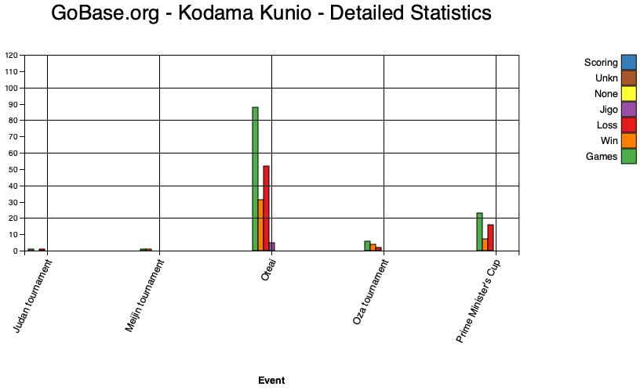
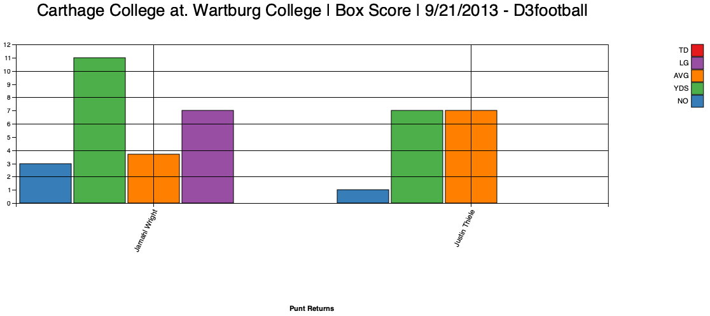
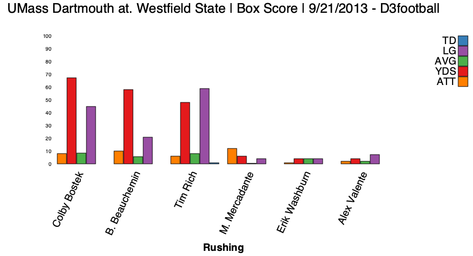
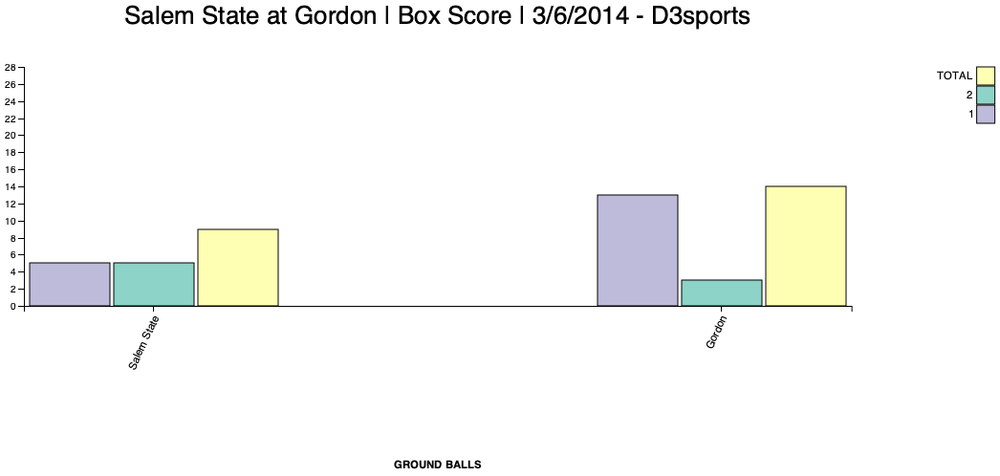
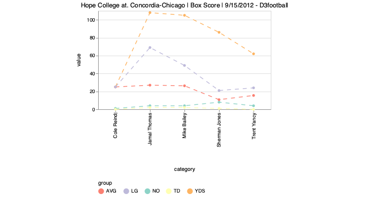
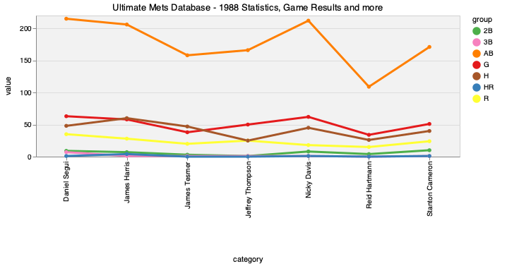
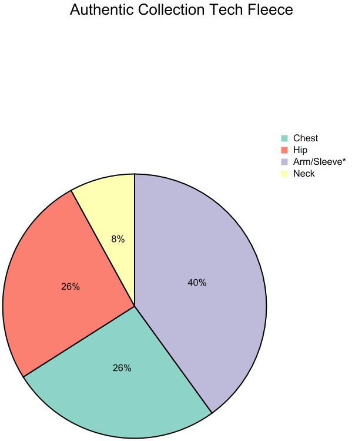
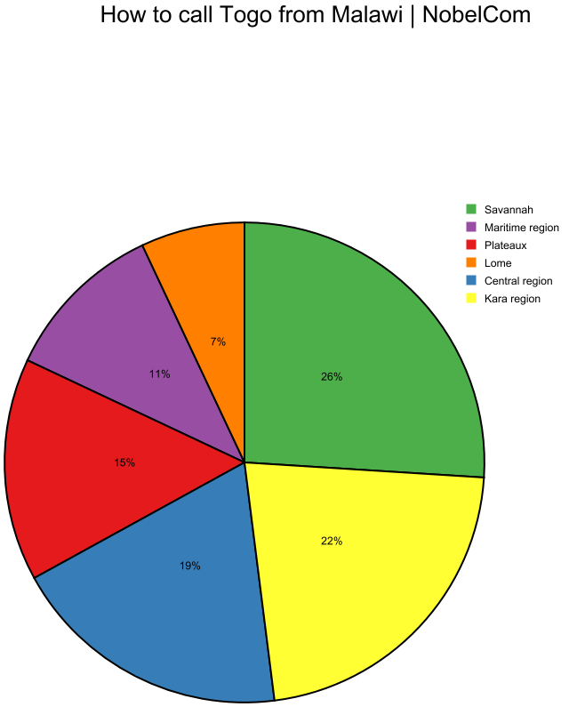
A.2 Data Augmentation by Knowledge Distillation
We select the small dataset (3700 charts) from PlotQA and the augmented charts from WDC, since these datasets are accompanied by the underlying data tables which serve as suitable chart representation for LLMs. Also, they cover a wide range of topics which contributes to the diversity in the generated summaries (Section 3.1). Fig. 3 shows our process for generating summaries for the charts that have underlying data tables using InstructGPT model Ouyang et al. (2022). The input mainly consists of one demonstration (table-caption pair) followed by the desired chart data table. The output is the generated summary. Using this mechanism, we generated a small dataset of 3,700 samples. We then finetuned Flan-T5 XL Chung et al. (2022) on this dataset. To our knowledge, Flan-T5 was the SoTA open-sourced instruction-tuned model during the development of our dataset. After finetuning on our task, we (qualitatively) observed similar performance as text-davinci-003. At the final step, we used the finetuned Flan-T5 model to generate summaries for all the charts that do not have an associated summary (e.g., PlotQA, augmented charts, OWID and OECD charts). In this process, we added around 470K summaries for charts in our pretraining corpus. Fig. 5 shows some examples generated by the finetuned Flan-T5.
To benefit more from the capability of GPT models in generating high-quality summaries, we further prompt ChatGPT (gpt-3.5-turbo) OpenAI (2022) to generate summaries for the charts from Statista and Pew Research and put these in our pretraining corpus instead of the original summaries in the Chart-to-Text benchmark Shankar et al. (2022). In most cases, we found the summaries from ChatGPT to be more elaborate and of better writing style. For the Pew Research Centre charts, the underlying data tables are not provided. However, we have observed that the underlying data values are written on the visual elements in most of these charts. Hence, we decided to use an OCR tool to extract the layout-preserving texts from the chart images, and then feed it into ChatGPT to generate the summaries as shown in Fig. 6. We realized that ChatGPT is capable of understanding a chart from the OCR data.
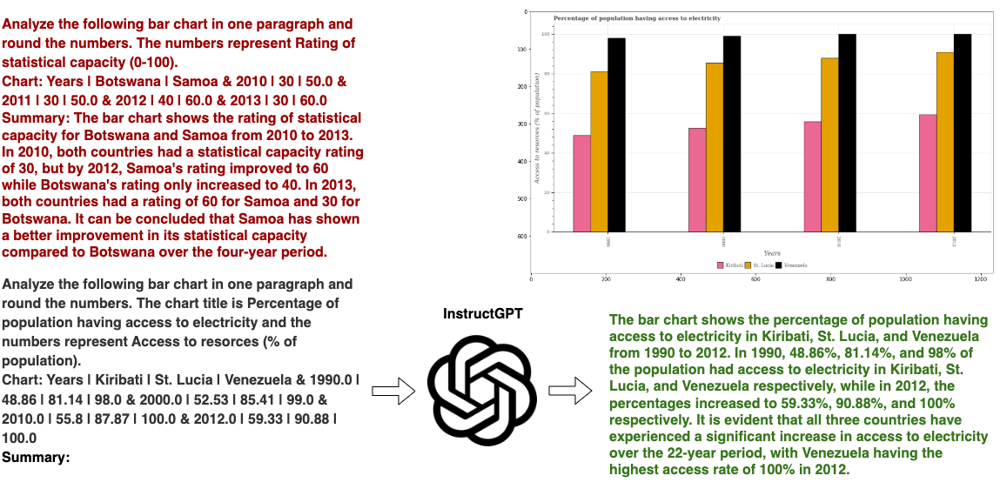
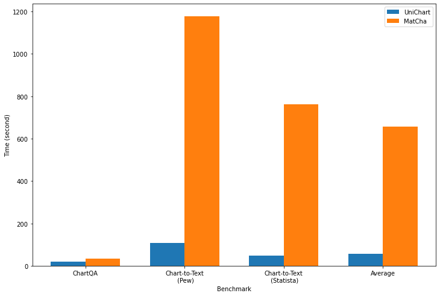
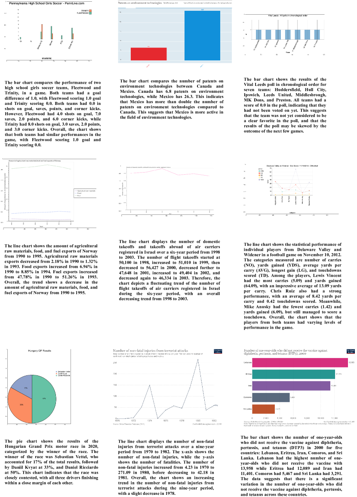
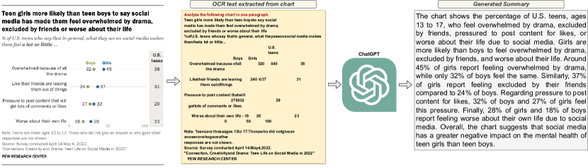
A.3 Dataset Analysis
The linguistic characteristics of the textual elements vary across different datasets, with charts from PlotQA and PewResearch often having longer text elements (e.g., axis labels, legends, titles), while augmented data and Beagle datasets contain shorter text
A.4 Experiments Setup
To minimize the computational resource requirements, we initialize our model from the base Donut weights Kim et al. (2022). Our pretraining process consists of two stages. In the first stage, we set the input image resolution to 512x512 and pretrain for 300K steps. In the second stage, we increase the input image resolution to 960x960 and pretrain for an additional 100K steps. Table 6 shows the hyperparameters we used in pretraining and finetuning our model on each downstream task. All our experiments were carried out using one 4-A100 (40GB), one 4-A100 (80GB), and one 4-V100 (32 GB) GPU machines.
| Experiment | # Epochs/Steps | Learning Rate | Batch Size | GPUs | Saving Mechanism |
| Pretraining | |||||
| First-stage/ablations | 300K steps | 1e-4 | 160 | 4xA100 82GB | each 50K steps |
| Second-stage | 100K steps | 1e-4 | 80 | 4xA100 82GB | each 50K steps |
| Finetuning (main 960x960 model) | |||||
| ChartQA | 20 epochs | 5e-5 | 24 | 4xV100 32GB | each 1 epoch |
| Chart-to-text Pew | 200 epochs | 5e-5 | 48 | 4xA100 40GB | each 5 epochs |
| Chart-to-text Statista | 100 epochs | 5e-5 | 48 | 4xA100 40GB | each 5 epochs |
| OpenCQA | 200 epochs | 5e-5 | 24 | 4xV100 32GB | each 5 epochs |
A.5 Ablation study
To further assess the impact of our different pretraining objectives on our model’s performance, we conducted ablation studies. Due to computational limitations, we focused on pretraining the model only on the lower image size (512x512) and compared it against the corresponding main model (512x512). From Table 8, we observe that removing the Chart Summarization or Open-ended Question Answering objectives led to a slight decrease in performance on ChartQA. We attributed this to the abundance of numerical reasoning examples in pretraining. However, removing the Numerical Reasoning pretaining task led to a substantial decrease in performance on ChartQA, highlighting the importance of this task in imbuing numerical abilities into our model. Pretraining the model without the Data Table Generation objective resulted in a relatively weak performance in the ChartQA benchmark, underscoring the importance of understanding underlying data tables of charts in answering reasoning questions.
A.6 Human and ChatGPT Evaluation
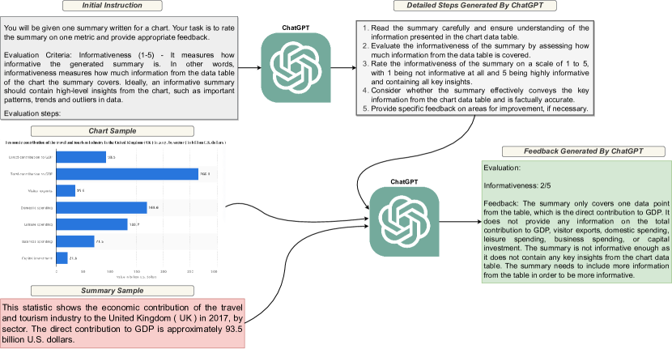
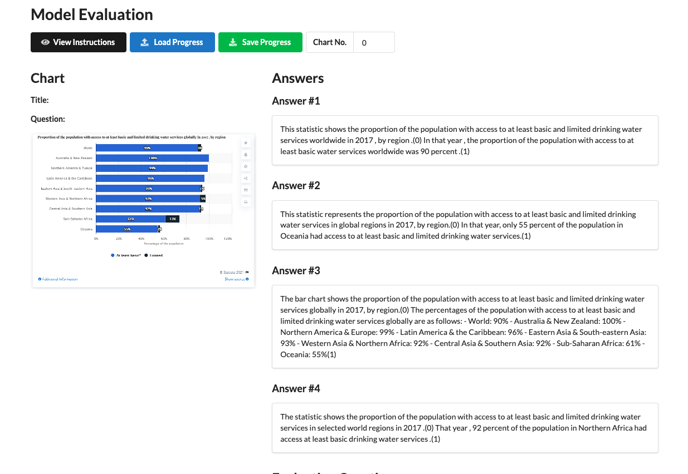
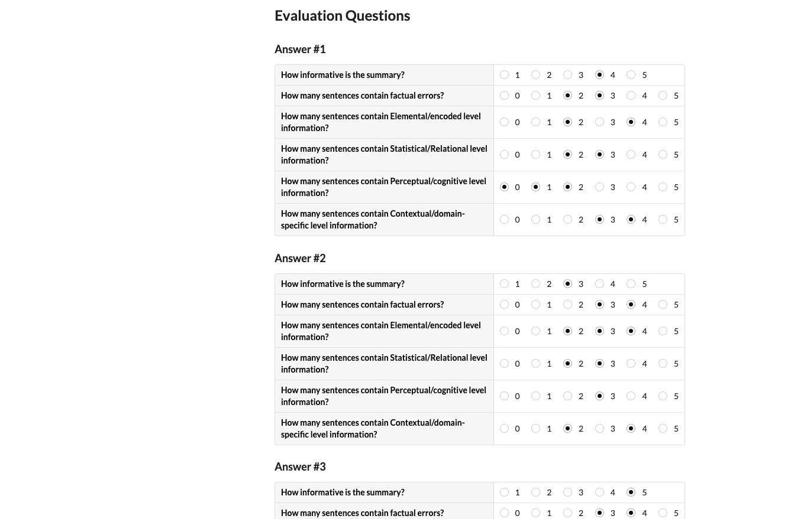
| Criteria | ZeroShot | Finetuned | MatCha | Gold |
| Factually incorrect sents | 13.45% | 9.63% | 21.97% | 3.59% |
| Elemental/encoded sents | 19.42% | 26.06% | 29.61% | 21.07% |
| Statistical/relational sents | 57.41% | 33.42% | 34.07% | 34.70% |
| Perceptual/cognitive sents | 6.98% | 1.41% | 0.31% | 5.39% |
| Contextual/domain-specific sents | 1.36% | 14.44% | 7.32% | 20.56% |
As discussed in section Section 5.3, we evaluate the following three criteria in the human evaluation study: (1) Informativeness which measures how much information from the chart the summary covers. Ideally, an informative summary should contain high-level insights from the chart, such as important patterns, trends, and outliers in data; (2) Factual Correctness which considers how accurate the summary is. A factually correct summary should only contain information (e.g. numbers, events, entities) that is true and/or supported by the chart; (3) Semantic Levels defined by Lundgard and Satyanarayan (2021) which categorize the content of summaries across four levels: visual encoding (e.g., axis, legends, color), statistical/relational (e.g., min, max, avg.), perceptual/cognitive (e.g., describing overall trends, complex patterns, or outliers), and context/domain specific information. Our process for evaluating the informativeness is explained in Section 5.3. For factual correctness and semantic level measures, the annotator goes through each sentence of the summary to determine whether the sentence contains any factual error and what levels of semantic content are present for that sentence. Table 7 shows the results of our human evaluation study on factual correctness, and different semantic levels.
A.7 Error Analysis
Fig. 9 shows the models performance on challenging samples. Q1 and Q2 examples are two visual numerical reasoning questions about charts which look challenging for SoTA models. Q3 is an example of an overpopulated chart with so many data elements which confuses the model to generate insightful summary. Finally, Q4 shows a factual error in a generated summary from finetuned UniChart.
| ChartQA | |||
| Model | aug. | human | avg. |
| UniChart (512x512) | 85.84 | 43.60 | 64.72 |
| No Chart Summarization | 84.96 | 42.72 | 63.84 |
| No Open-ended Question Answering | 85.52 | 42.96 | 64.24 |
| No Numerical & Visual Reasoning | 84.08 | 35.44 | 59.76 |
| No Data Table Generation | 83.84 | 42.24 | 63.04 |
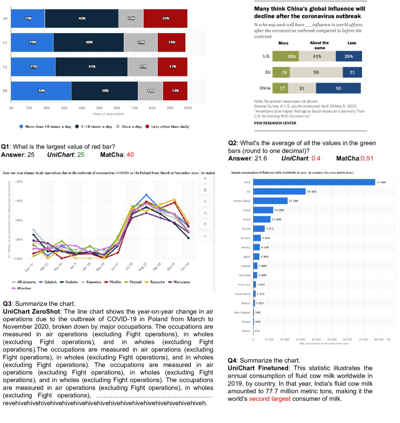
A.8 Time and Memory Efficiency
To compare the time efficiency, we measure the average inference time of the models on three benchmarks: ChartQA, Chart-to-Text (Pew), and Chart-to-Text (Statista) using 10 random samples from each benchmark. The experiments were conducted on Google’s Colab platform with cpu type. Overall, UniChart shows much faster inference times compared to MatCha as shown in Fig. 4.
A.9 Templates for Numerical and Visual Reasoning Question Generation
Table 9 is the list of the templates we used to generate numerical and visual reasoning questions.
| Template-based Questions |
| 1) First bar from the top/left in the second group from the top/left |
| 2) First bar from the bottom/right in the second group from the bottom/right |
| 3) Second bar from the bottom/right in the first group from the bottom/right |
| 4) Second bar from the right/bottom in the first group from the left/top |
| 5) Topmost/Leftmost bar |
| 6) Bottommost/Rightmost bar |
| 7) Second bar from the top/left |
| 8) Second bar from the right/bottom |
| 9) Leftmost topmost bar |
| 10) Leftmost bottommost bar |
| 11) Rightmost topmost bar |
| 12) Rightmost bottommost bar |
| 13) Leftmost <color> data |
| 14) Rightmost <color> data |
| 15) Second from the left <color> data |
| 16) Second from the right <color> data |
| 17) Which legend represented by <color>? |
| 18) What is the color of <legend>? |
| 19) Which one is greater, <x1> or <x2>? |
| 20) Divide the sum of largest and lowest values by <n> |
| 21) When did line <legend - label> peak? |
| 22) What is the difference between maximum and minimum of <legend - label>? |
| 23) Sum pie segments above <value> |
| 24) What is the sum of top three values? |
| 25) What is the median/mode of <legend - label>? |
| 26) What is the negative peak of <legend - label>? |
| 27) What is the largest/smallest value of <legend - label>? |
| 28) Which two x-axis labels of <legend - label> sums up to <value>? |
| 29) What is the sum of the second highest and second lowest value of <legend - label>? |
| 30) Which x-axis label is second highest for <legend - label>? |
| 31) What is the sum of two middle values of <legend - label>? |
| 32) Which two x-axis labels of <legend - label> have a difference of <value> ? |
| 33) What is the average of <legend - label> from <x - label - 1> to <x - label - 2>? |
| 34) What is the average of the highest and lowest value of <legend - label - l>? |
| 35) What is the sum of the average of <legend - label - 1> and average of <legend - label - 2>? |
| 36) What is the sum/difference of the maximum of <legend - label - 1> and minimum of <legend - label - 2>? |
| 37) Which x-axis label has the maximum/minimum difference between <legend - label - 1> and minimum of <legend - label - 2>? |
| 38) Which x-axis label witnessed the smallest value of <legend - label>? |
| 39) Which label contains largest/smallest values across all labels? |
| 40) Sum up the medians of all the data series in this chart |
| 41) What is the average of all values above <value>? |
| 42) What is the sum of the largest and smallest difference between <legend - label - 1> and <legend - label - 2>? |
| 43) What is the maximum/minimum difference between <legend - label - 1> and <legend - label - 2>? |
| 44) What is the ratio of the largest to the smallest pie segment? |
| 45) What is the ratio of the two largest/smallest segments? |
| 46) What is the difference between the leftmost and rightmost bars? |
| 47) What is the sum of the bars in the second group from the left? |
| 48) What is the sum of the bars in the first group from the right? |
| 49) What is the ratio between the two leftmost bars? |
| 50) What is the difference between the rightmost <color - 1> bar and leftmost <color - 2> bar? |
| 51) What is the average of <color> bars values? |
| 52) How many <color>bars are larger than <N> ? |
| 53) What is the average of the bars in the second group from the right? |
| 54) How many bars in the leftmost group have a value over <N>? |
| 55) What does the <color> represent? |
| 56) What is the median value of the <color> bars/line? |
| 57) What is the average of the <color - 1> sum and <color - 2> sum? |
| 58) What is the average of the <color - 1> median and <color - 2> median? |
| 59) What is the least difference between the <color - 1> and <color - 2> bars/line? |
| 60) What is the ratio between the leftmost and rightmost bar in the first group from the left? |
| 61) What is the maximum value in the <color> bars/line? |
| 62) What is the minimum value in the <color> bars/line? |
| 63) What is the sum of <color> bars/line? |
| 64) What is the difference between the maximum values of the two leftmost bar groups? |
| 65) Sum of the first <color - 1> and last <color - 2> bars/line points |
| 66) Difference between the two lowest <color> bars |
| 67) Add largest and smallest <color> line/bar values and divide by 2 |
| 68) What is the value of <color> line/bars in <x - axis - label>? |
| 69) Sum/Average of <color - 1> and <color - 2> values in <x - axis - label>? |
| 70) Sum of highest points in <color - 1> and <color - 2> lines/bars |
| 71) Which color has the highest/smallest values? |
| 72) How many values are equal in <color - 1> line/bar? |
| 73) Sum two rightmost values of <color> graph |
| 74) Product of two smallest values in the graph |
| 75) Sum of lowest and median values of <color> graph/bars |
| 76) When did <color> line reached the peak? |
| 77) What is the average of the rightmost three points of <color> line? |
| 78) How many <color> data points are above <value>? |
| 79) What’s the ratio of the largest and the third/second-largest <color> bar? |
| 80) Is the sum of lowest value of <color - 1> and <color - 2> bar greater than largest value of <color - 3> bar? |
| 81) Is the median value of <color - 1> bars greater than the median value of <color - 2> bars? |
| 82) Is the median of all the <color - 1> bars greater than the largest value of <color - 2> bar? |
| 83) What’s the product of <color> bars in India and Japan? |
| 84) Is the sum of the two middle bars greater than the sum of top and bottom bars? |
| 85) What’s the ratio of the <x - axis - label - 1> <color - 1> bar and the <x - axis - 2> <color - 2> bar? |
| 86) Is the total of all <color - 1> bars greater than the total of all <color - 2> bars? |
| 87) Take the sum of the two smallest <color - 1> bars and smallest <color - 2> bars, deduct the smaller value from the larger value, what’s the result? |
| 88) What is the sum/average of two smallest/largest <color> bars? |
| 89) What is the ratio of <color - 1> and <color - 2> segments? |
| 90) What segment is represented by <color>? |